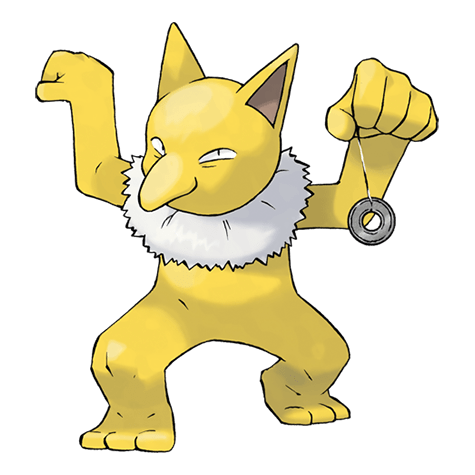

Назад
Гипно

Гипно — Покемон первого поколения под номером 97 в Покедекс. Обитает он в регионе Канто и относится к Психическому. Это последняя стадия эволюции Покемона Дроузи. Гипно держит в руке маятник. Блеск и искрящееся движение маятника убаюкивают противника и вводят его в состояние глубокого гипноза. Во время поиска очередной добычи этот Покемон полирует свой маятник.
Тип:
Психический
Эволюция
# 097 Гипно
Финальная стадия